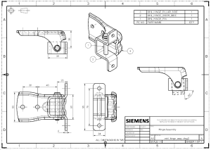

图纸文件
使用新建命令来创建图纸文件，以将您的图纸保存在与模型不同的文件中，将关系设为引用现有部件，然后选择一个图纸模板。
快捷菜单
右击部件导航器中的图纸页节点、视图边界或者其它对象以访问制图命令，比如：
要在图纸中添加一个基本视图，右击部件导航器中的图纸页节点，或者图形窗口中的图纸页边界，并选择添加基本视图
要从现有视图中添加剖视图或局部放大图，右击视图边界并选择想要的视图类型
要修改视图样式，比如修改隐藏线样式，右击视图边界并选择样式